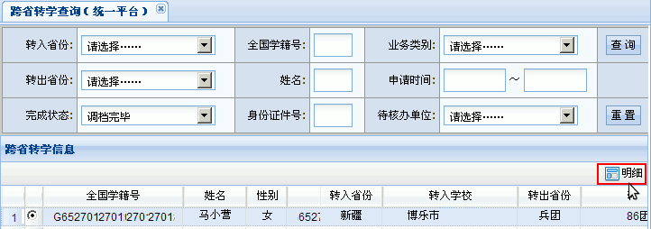
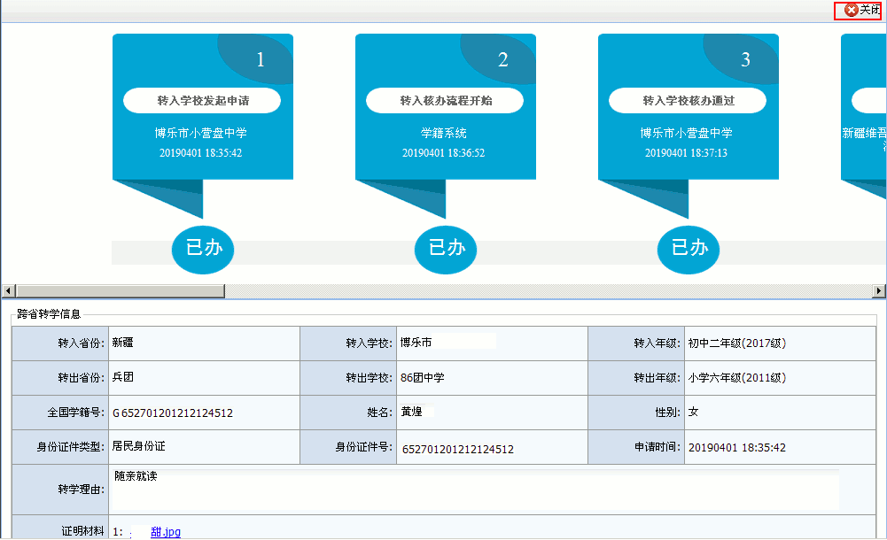
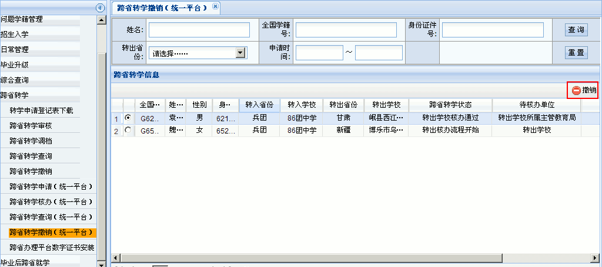

全国中小学生学籍管理系统操作指南
作者：TeliuTe 来源：基础教程网
三十、跨省转学申请、审核、查询、撤销 返回目录 下一课跨省转学是在两个省级之间进行转学，申请表上需要盖四个章；
1、跨省转学申请、审核、查询、撤销
1）依次点“学籍管理－跨省转学－跨省转学申请”，出来申请面板；
2）点右边的“申请”按钮，出来学生信息面板，红星必填，点“添加－浏览”打开申请表照片，最后点右上角“保存”返回；
3）再在左侧栏点“跨省转学审核”，选择一个学生，点右上角“核办”，默认是转入审核，上边还有一个“跨省转出”标签；
4）在核办意见里选择“同意”，点右上角“确定”按钮，如果不同意，则需注明原因；
5）点左侧栏“跨省转学查询”，右边默认会列出未完成的学生列表，注意看转学状态和待核办单位；
6）跨省转学申请经过，上级审核通过，转出省审核通过，对方学校通过，对方学校主管通过后，会提示一条“可以调档”，
在首页点击提示，或者在左边选择“跨省转学调档”，可以调取学生档案，完成转学；

7）在是否转学完毕里，选择“异常结束”，可以查看所有转学失败的学生列表；
8）选择一个学生，点“明细”查看未通过的原因，根据提示进行相应处理；

9）如果发现转学中存在问题，需要撤销申请，如果学校还未审核，则在审核时选择“不同意”即可撤销，左侧点击“跨省转学撤销”，撤销申请；

本节学习了跨省转学申请、审核、查询、撤销的基础知识，如果你成功地完成了练习，请继续学习下一课内容；
本教程由TeliuTe制作|著作权所有
基础教程网：http://teliute.org/
美丽的校园……
转载和引用本站内容，请保留作者和本站链接。